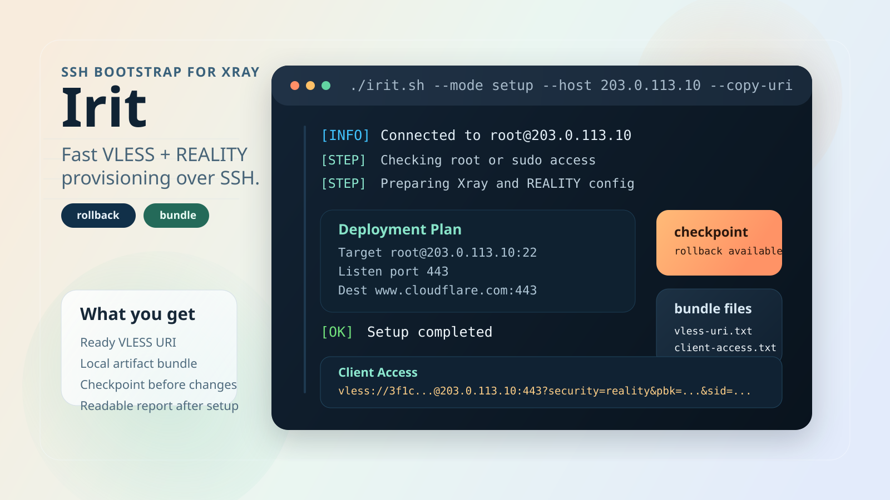
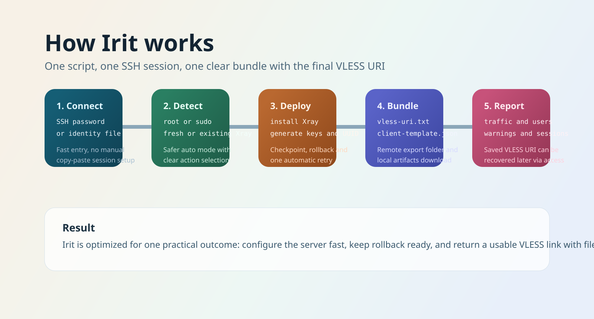

Fast setup
Provision VLESS + REALITY from one SSH session with a cleaner terminal UX.
Bootstrap Xray over SSH, keep rollback ready, and get a usable VLESS link with client files in one flow.
./irit.sh --mode setup --user root --host 203.0.113.10 --password 'secret'

Provision VLESS + REALITY from one SSH session with a cleaner terminal UX.
Create checkpoints, roll back on failure, and retry once automatically.
Export URI, JSON configs, YAML profile, manifest, hints, and QR assets.
Use doctor, report, access, and rollback modes to manage the server later.

People do not have to manually build UUID-based client links, remember public keys, or reassemble configuration pieces from scratch. The value is visible fast, which makes the project easier to share and easier to adopt.